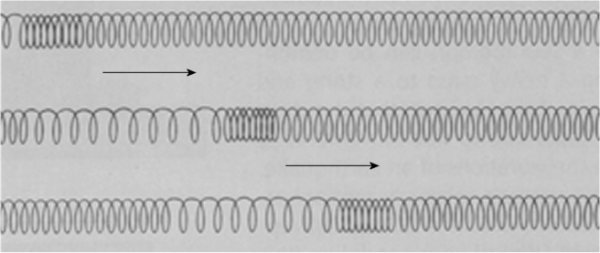
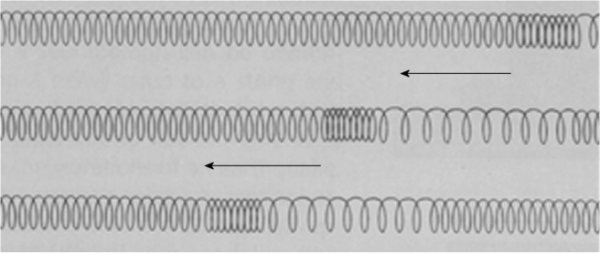
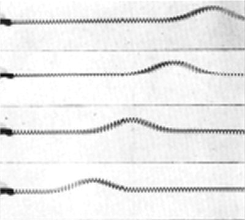
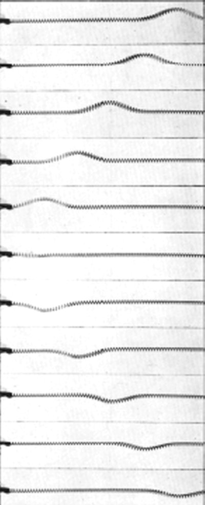
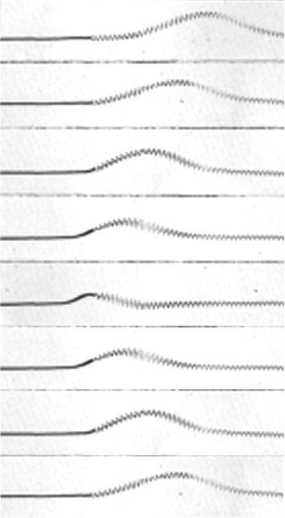

Unde mecanice
C.3. |
|
Reflexia undelor mecanice |
 Activitatea experimentală 1C3−1
Activitatea experimentală 1C3−1
Investighează ce se întâmplă când o undă longitudinală, care se propagă într−un resort cu multe spire, ajunge la capetele acestuia.
Pasul 1 Pune resortul pe suprafaţa unei mese, ţine−l de capete şi extinde−l aproximativ un metru.
Pasul 2 Ţine fix unul dintre capete şi împinge brusc celălalt capăt, în lungul resortului. Observă ce se întâmplă.
Împingând brusc unul dintre capete, provoci o perturbaţie la acel capăt, comprimând rapid câteva spire de la acel capăt. Perturbaţia se propagă în lungul
resortului, din aproape în aproape (figura 1C3−1).

Fig. 1C3-1. O undă longitudinală se propagă în lungul unui resort cu multe spire.
Condiţiile de propagare sunt mereu (aproape) aceleaşi în lungul resortului, astfel că unda se propagă uniform (cu aproximativ aceeaşi viteză). Doar amortizarea
face ca amplitudinea perturbaţiei să scadă gradual (frecarea cu suprafaţa mesei este considerabilă).
La capetele resortului, însă, condiţiile de propagare se modifică brusc (acolo resortul este ţinut de mâinile tale). Perturbaţia "ricoşează" pe aceste
discontinuităţi, inversându−şi sensul de propagare (figura 1C3−2)!

Fig. 1C3-2. Unda îşi inversează sensul de propagare atunci când întâlneşte o discontinuitate în mediul de propagare.
 Numim reflexie inversarea sensului de propagare al unei unde pe o discontinuitate a mediului în care aceasta se propagă.
Numim reflexie inversarea sensului de propagare al unei unde pe o discontinuitate a mediului în care aceasta se propagă.
Dacă amortizarea este slabă, unda poate "călători" de mai multe ori, înainte şi înapoi, între discontinuităţile de la capetele resortului.
Activitatea experimentală 1C3−2
Investighează reflexia unei perturbaţii transversale într−un resort cu multe spire.
Ţine resortul pe masă, aşa cum ai făcut la activitatea experimentală precedentă. De data aceasta, trage unul dintre capete, în lungul suprafeţei mesei
şi perpendicular pe axa resortului.
Observă ce se întâmplă.
Perturbaţia transversală pe care ai provocat−o la unul dintre capetele resortului se propagă uniform în lungul acestuia, până întâlneşte discontinuitatea
de la celălalt capăt (figura 1C3−3).
|  |
Fig. 1C3-3. O undă transversală se propagă în lungul unui resort cu multe spire.
|
Direcţia de propagare se modifică brusc − unda se reflectă (figura 1C3−4).
|  |
Fig. 1C3-4. Unda se reflectă pe discontinuitatea de la capătul resortului.
|
 Provocarea 1C3−1
Provocarea 1C3−1
Ce se întâmplă cu faza undei la reflexia pe un capăt al resortului ţinut (aproape) fix?
Unda reflectată la capătul ţinut (aproape) fix se întoarce pe partea cealaltă a axei resortului!
Aceasta înseamnă că faza se modifică brusc − dintr−o elongaţie maximă de o parte a resortului, se trece brusc la o elongaţie maximă pe partea
cealaltă (figura 1C3−4).
La capătul mai rigid (mai puţin mobil), faza se modifică brusc cu p (undei i−ar trebui o jumătate de ciclu pentru
a trece de la elongaţie maximă pozitivă la elongaţie maximă negativă).
Reflexia pe o discontinuitate mai rigidă se face cu modificare bruscă a fazei cu p (o jumătate de ciclu).
Activitatea experimentală 1C3−3
Investighează reflexia pe o discontinuitate mai puţin rigidă.
Pasul 1 Leagă un fir de aţă lung de 0,5 m la unul dintre capetele resortului. Fixează celălalt capăt al firului pe suprafaţa
mesei, cu bandă adezivă.
Pasul 2 Extinde capătul liber al resortul, ţinându−l în mână. Provoacă o perturbare transversală şi observă reflexia acesteia
la capătul cu firul de aţă.
Firul permite mişcarea aproape liberă a capătului resortului, pe direcţie transversală faţă de axul acestuia.
Firul reprezintă o discontinuitate mai puţin rigidă. În aceste condiţii, perturbaţia se reflectă de aceeaşi parte faţă de axul resortului!
(figura 1C3−5).
|  |
Fig. 1C3-5. Reflexia pe o discontinuitate mai puţin rigidă.
|
Reflexia pe o discontinuitate mai puţin rigidă se face fără modificarea fazei.
Până acum ai analizat, pentru simplitate, unde care se propagau într−un mediu practic unidimensional (axul resortului).
Există însă numeroase situaţii de interes în care undele se pot propaga în medii multidimensionale, cum sunt undele pe suprafaţa apei.